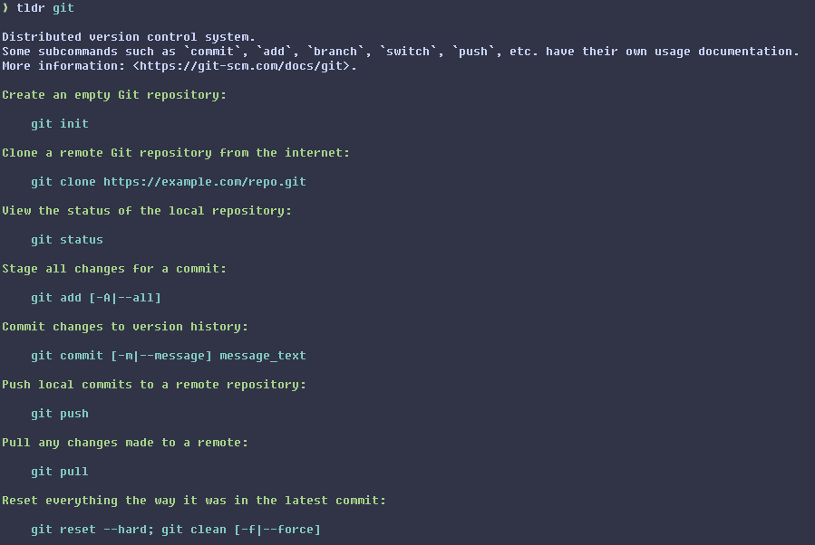

← Programming
· planted 7th Nov 2026
A tiny tldr client
Who are you calling unreadable‽
#include <stdio.h>
#include <stdlib.h>
#include <string.h>
#define dieif(x) if(x){fprintf(stderr, "Usage: tldr «page»\n"); return 1;}
int main(int ac, char **av) {
char *home=getenv("HOME"); dieif(!home);
char fname[64]; int n=0;
for (int i=1; i<ac; ++i) {
dieif(strchr(av[i],'/')); int lv=strlen(av[i]); dieif(n+lv>=60);
strcpy(fname+n,av[i]); n+=lv; fname[n++]='-';
}
dieif(n==0); fname[n-1]='.'; fname[n++]='m'; fname[n++]='d'; fname[n]=0;
for(int i=0; i<n; ++i){fname[i]|=32;} // -|32 = -
char l[512], *dirs[2]={"linux","common"};
for (int i=0; i<2; ++i) {
char pth[256]; snprintf(pth, 256, "%s/.cache/tldr-main/pages/%s/%s", home, dirs[i], fname);
FILE *f = fopen(pth, "r");
if (f) {
for(int _=0; _<2; ++_){dieif(!fgets(l,512,f));} putchar('\n'); //skip
while (fgets(l,512,f)) {
switch (l[0]) {
case '>': printf("%s", l+2); break;
case '-': printf("\n\x1b[32m%s\x1b[0m", l+2); break; //green
case '`':
printf("\n\x1b[36m "); //cyan
l[strlen(l)-2]=0; char *p=l+1, *pp=l+1;
for (;*p;) {
if ((p[0]=='{' && p[1]=='{') || (p[0]=='}' && p[1]=='}')) {
printf("%.*s", (int)(p-pp), pp); p+=2; pp=p;
} else {
p++;
}
}
printf("%.*s\x1b[0m\n", (int)(p-pp), pp); //reset and last bit
break;
default: break;
}
}
putchar('\n'); return 0;
}
}
fprintf(stderr, "ERROR: `%s` or cache directory not found. Try running:\n", fname);
fprintf(stderr, " rm -fr ~/.cache/tldr-main ; curl https://codeload.github.com/tldr-pages/tldr/tar.gz/main --output ./t.gz && tar xvf t.gz -C ~/.cache/ && rm t.gz\n");
return 1;
}

and even performs quite well:$ hyperfine --warmup 100 -N \
'./result/bin/tldr tar' \
'./outfieldr/zig-out/bin/tldr tar' \
'./tealdeer/target/release/tldr tar' \
'./tlrc/target/release/tldr tar'
Benchmark 1: ./result/bin/tldr tar
Time (mean ± σ): 206.3 µs ± 78.1 µs [User: 126.9 µs, System: 22.6 µs]
Range (min … max): 133.6 µs … 1223.3 µs 13485 runs
Benchmark 2: ./outfieldr/zig-out/bin/tldr tar
Time (mean ± σ): 247.3 µs ± 90.9 µs [User: 152.1 µs, System: 36.6 µs]
Range (min … max): 160.1 µs … 1887.3 µs 11545 runs
Benchmark 3: ./tealdeer/target/release/tldr tar
Time (mean ± σ): 1.1 ms ± 0.2 ms [User: 0.4 ms, System: 0.6 ms]
Range (min … max): 0.8 ms … 3.1 ms 2411 runs
Benchmark 4: ./tlrc/target/release/tldr tar
Time (mean ± σ): 1.0 ms ± 0.2 ms [User: 0.3 ms, System: 0.6 ms]
Range (min … max): 0.6 ms … 4.3 ms 2659 runs
Summary
./result/bin/tldr tar ran
1.20 ± 0.63 times faster than ./outfieldr/zig-out/bin/tldr tar
4.88 ± 2.19 times faster than ./tlrc/target/release/tldr tar
5.15 ± 2.26 times faster than ./tealdeer/target/release/tldr tar
 Have a comment? Write me an email!
Have a comment? Write me an email!